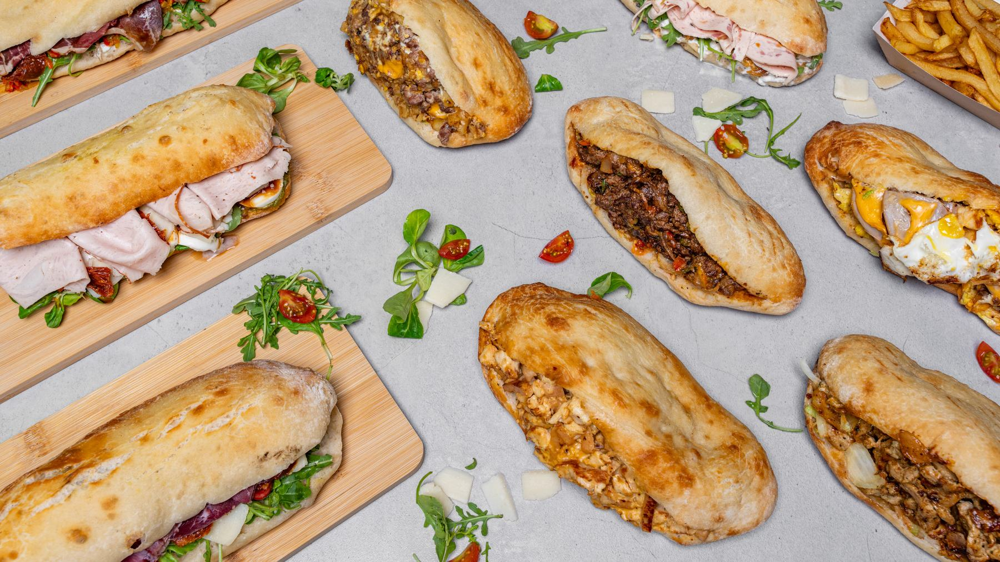
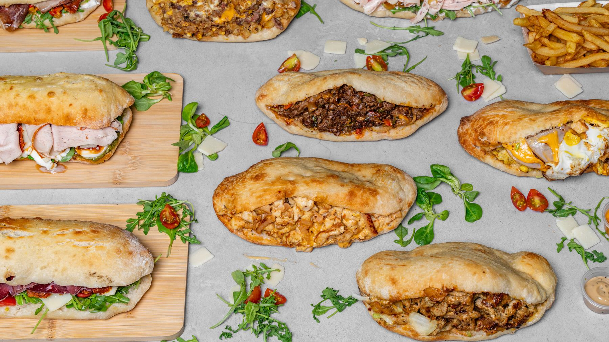

Composez votre commande
Toute la carte est en ligne : sandwichs chauds servis avec frites et boisson, panuozzos froids à l’italienne, salades et snacks.

Villiers-sur-Marne · Click & Collect
Le panuozzo, ce pain napolitain cuit au four : moelleux dedans, croustillant dehors. Garni de charcuteries italiennes ou de viandes grillées, préparé à la commande, prêt à emporter en 20 minutes.
Click & Collect
Pas de file d’attente, pas de sandwich qui refroidit : vous choisissez votre créneau, on prépare tout juste avant votre arrivée.
Toute la carte est en ligne : sandwichs chauds servis avec frites et boisson, panuozzos froids à l’italienne, salades et snacks.
Dès que possible ou plus tard dans la journée : le créneau de retrait s’adapte à votre pause déjeuner comme à votre soirée.
Vous vous présentez au comptoir avec votre prénom : la commande est prête, emballée, et vous repartez aussitôt.
Les incontournables
Une sélection de nos spécialités les plus demandées. Le reste de la carte vous attend juste à côté.
Ne rien manquer
Nouveautés de la carte, coulisses du four, éditions limitées : tout passe d’abord par nos réseaux.
Notre spécialité
Né dans les environs de Naples, le panuozzo part d’une pâte à pizza cuite au four, ouverte en deux, garnie, puis repassée quelques instants au four. Résultat : un pain moelleux au cœur, croustillant sur les bords, qui tient la garniture sans se détremper.
Chez Dilemme, on le décline de deux façons. Chaud : viandes grillées, escalope panée, œuf, cheddar fondu, servi avec frites maison et boisson. Froid : charcuteries italiennes, stracciatella, burrata, roquette, tomates confites, crème de truffe ou pesto.
Chaud ou froid, délicieux sera le choix.
Commander en ligne
Questions fréquentes
Vous composez votre commande en ligne, vous choisissez votre créneau de retrait, puis vous venez récupérer votre commande au 4 Place Joséphine Piquet à Villiers-sur-Marne. Tout est préparé à la commande : comptez environ 20 minutes de préparation.
Du mardi au jeudi de 12h à 23h, le vendredi de 14h30 à 23h, le samedi et le dimanche de 12h à 23h. Le restaurant est fermé le lundi.
Le panuozzo est un sandwich né dans la région de Naples : une pâte à pizza cuite au four, ouverte en deux et garnie. Le pain est à la fois moelleux à l’intérieur et croustillant à l’extérieur, ce qui change complètement d’un sandwich classique.
Oui, avec Le Composé : vous choisissez une sauce, un fromage, jusqu’à quatre légumes et jusqu’à deux viandes parmi la sélection italienne (jambon de dinde, mortadelle pistache, pastrami, bresaola, Black Angus…).
Oui. Toutes les viandes servies chez Dilemme sont halal, aussi bien dans les sandwichs chauds que dans les panuozzos froids et les snacks.
Oui : la salade de tomates mozzarella, la burrata, la salade de chèvre chaud, et Le Composé que vous pouvez garnir uniquement de fromages et de légumes.
Tous les sandwichs chauds sont servis avec des frites maison et une boisson, le prix affiché comprend la formule complète.